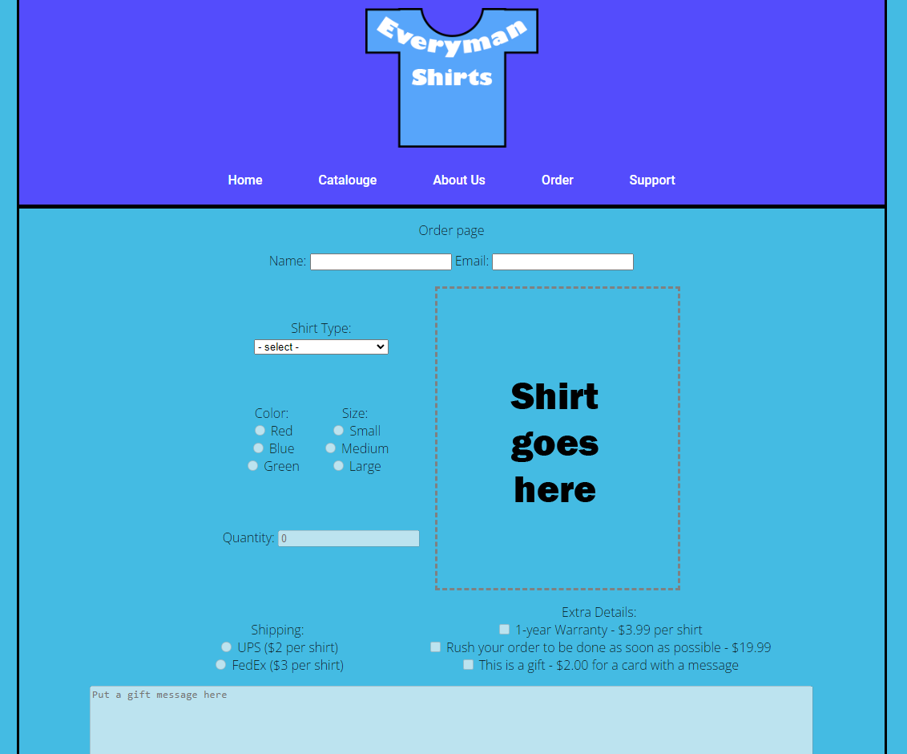

Shirt Store Website
In my school career I have done all sorts of classes. One in particular is web development. I have made all sorts of sites, mostly leaning towards more simplistic sites, but one I want to mention is a sort of store front I made for buying t-shirts.
It is only one page, as far as i remember those were the requirements, including having a nav bar for aesthetic purposes. However in this example, I demonstrate being able to update images as choices are selected and changed. There was also form submission as well. A lot of this website was just a showcase of using javascript, and while it may not seem like much, I am proud of this. I really liked updating the images in real time.
For reference, here is a link for a video demonstration: Link